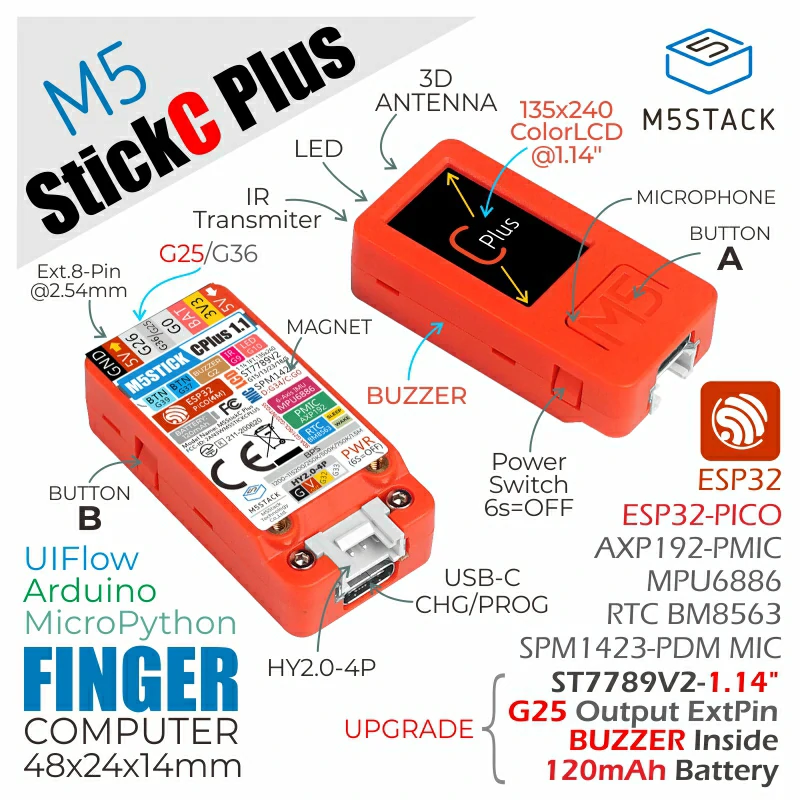
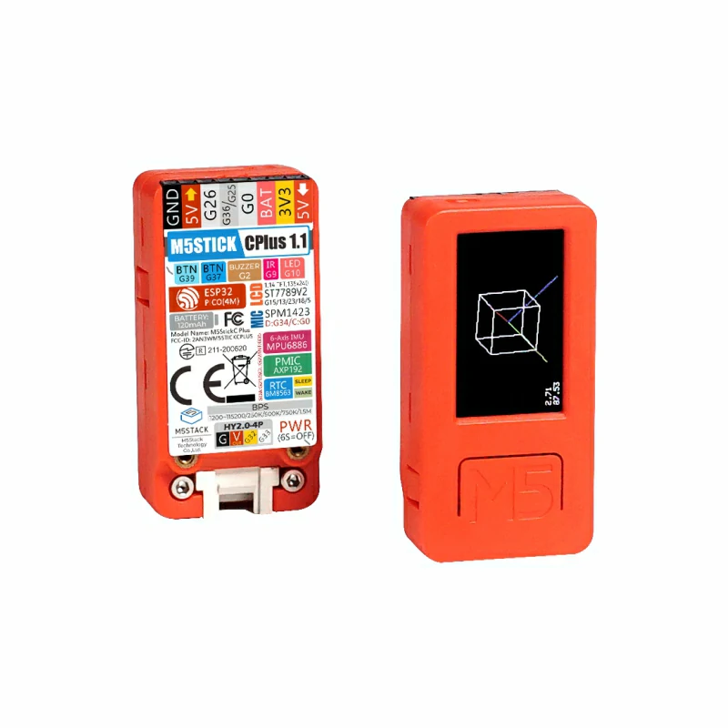
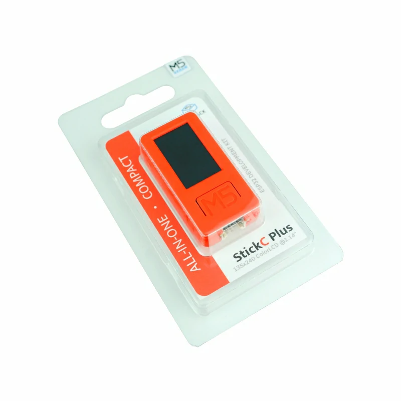
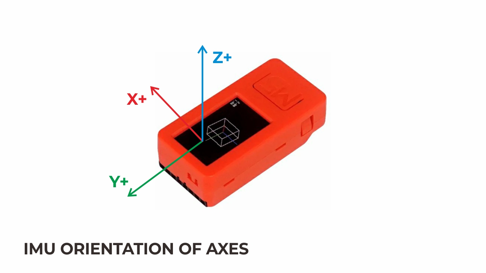
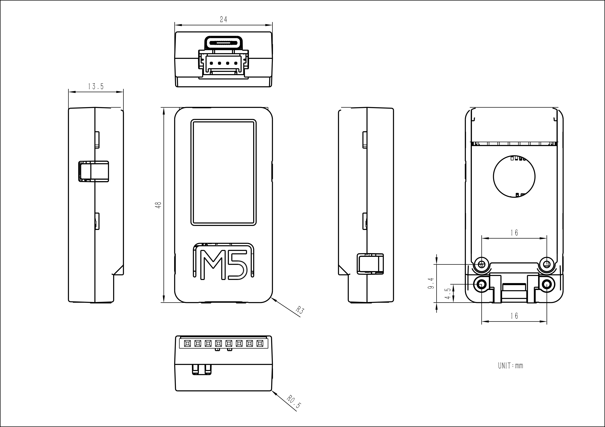
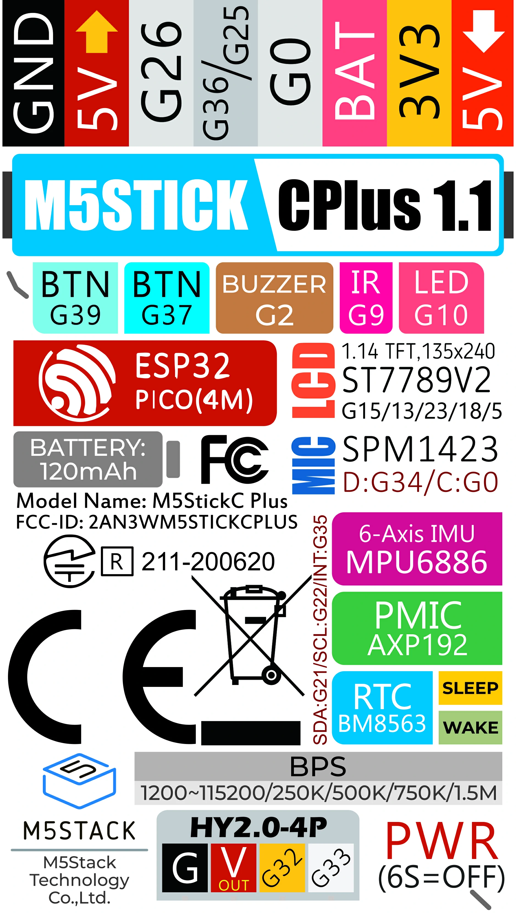
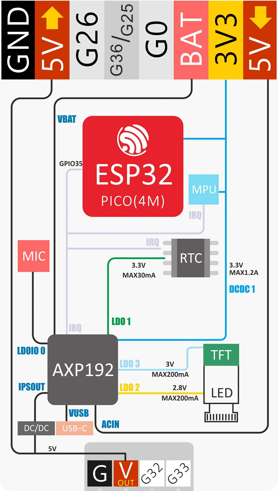
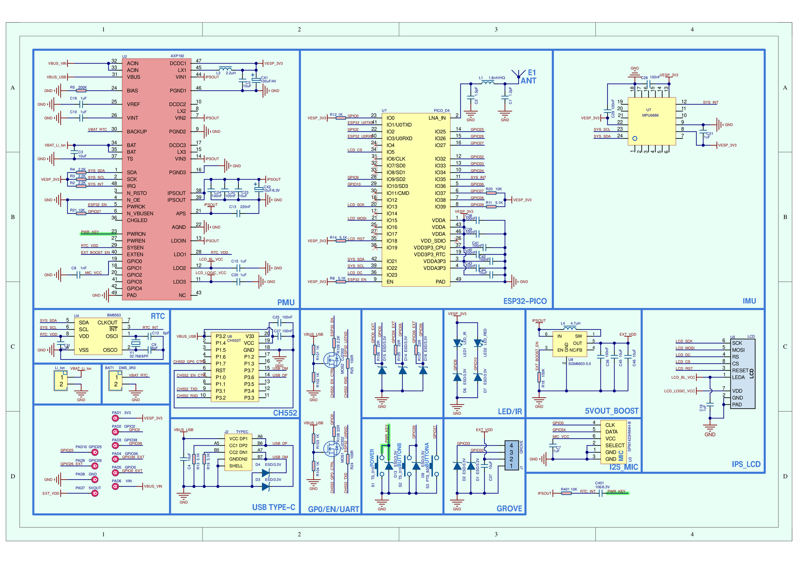

M5Stack M5StickC Plus
The M5StickC Plus is a compact IoT development kit built around an ESP32-PICO-D4 SiP (dual Xtensa LX6 @ 240 MHz, 4 MB flash, 520 KB SRAM). It integrates a 1.14” ST7789v2 TFT, an AXP192 power management IC, a BM8563 RTC, an MPU6886 6-axis IMU, an SPM1423 PDM microphone, a passive buzzer, an IR transmitter, a red LED and two user buttons, all powered from an internal 120 mAh LiPo battery.
 M5StickC Plus |
 M5StickC Plus |
 M5StickC Plus |
Features
ESP32-PICO-D4 (dual Xtensa LX6 @ 240 MHz), 4 MB flash, 520 KB SRAM
Wi-Fi 4 (2.4 GHz) and Bluetooth (radio supported by the chip; no board configuration enables them yet)
1.14” 135x240 ST7789v2 TFT on SPI2 (SCK=GPIO13, MOSI=GPIO15, CS=GPIO5, DC=GPIO23, RST=GPIO18); backlight and panel logic powered from AXP192 LDO2/LDO3
AXP192 PMIC on I2C0 (0x34): LCD rail bring-up and battery charging
BM8563 RTC on I2C0 (0x51), register compatible with the PCF8563 driver, battery backed
MPU6886 6-axis IMU on I2C0 (0x68), served by the MPU6050 uORB driver
SPM1423 PDM microphone (not supported yet)
Passive buzzer on GPIO2 (LEDC), IR transmitter on GPIO9 (not supported yet), red LED on GPIO10 (active low)
Two user buttons: GPIO37 (side button) and GPIO39 (front button); the red power button is wired to the AXP192, not to a GPIO

MPU6886 triaxial direction

Module dimensions (48.0 x 24.0 x 13.5 mm)
Power

Power structure (1/2)

Power structure (2/2)

Schematic; see the M5Stack documentation for the PDF version
Serial Console
The NSH console runs on UART0, exposed through the on-board FT232
USB-to-UART bridge. The board’s USB-C connector is charge-only; the
FT232 bridge (typically /dev/ttyUSB0 on Linux) is the only data
channel for flashing and the serial console, at 115200 8N1.
Configurations
nsh
Basic NuttShell configuration. Console on UART0 at 115200 bps. The
ST7789v2 LCD is enabled through the lcd_framebuffer layer (/dev/fb0,
240x135 RGB565). The on-board I2C devices are brought up: the AXP192
powers the LCD rails, the BM8563 is bound as the system RTC (the system
time is synchronized to it at boot), and the MPU6886 registers
/dev/uorb/sensor_accel0 and /dev/uorb/sensor_gyro0. littlefs on
the SPI flash (2.5 MB) is mounted at /data. The buttons,
fb, hello, leds and pwm built-in examples are enabled.
Flashing uses the simple boot layout (no second stage bootloader), so a single image write is enough:
$ ./tools/configure.sh esp32-m5-stickc-plus:nsh
$ make -j
$ esptool.py --chip esp32 --port /dev/ttyUSB0 --baud 115200 \
write-flash 0x1000 nuttx.bin